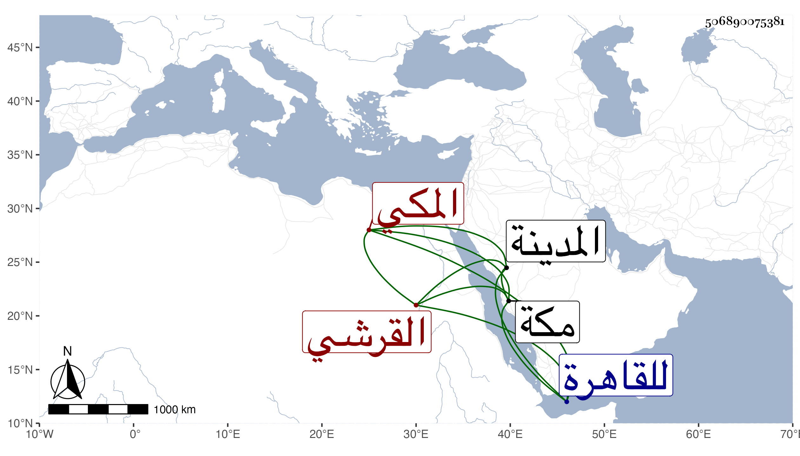

0902Sakhawi.DawLamic.ITO20230111-ara1.EIS1600.506890075381
Biography ID: 506890075381
407
عمر بن محمد بن محمد بن محمد بن حسين بن علي بن أحمد بن عطية بن ظهيرة السراج بن القاضي جمال الدين أبي السعود بن قاضي القضاة الكمال أبي البركات بن القاضي الجمال أبي السعود القرشي المكي شقيق أبي الخير محمد الآتي أمهما أم الخير ابنة القاضي أبي القسم بن أبي العباس بن عبد المعطي . ولد في المحرم سنة ثلاث وخمسين وثمانمائة بالمدينة النبوية وقدم مع أبيه إلى مكة فسمع من الشهاب أحمد بن علي المحلي وأجاز له في سنة أربع وخمسين فما بعدها أبو جعفر بن العجمي وآخرون وتكرر قدومه للقاهرة وكان قد حفظ القرآن وصلى به هو وشقيقه أبو بكر تناوبا في رمضان على عادة الأبناء وربما حفظ غيره وقرأ على خاله عبد القادر في النحو ويطالع له درسه ولم ينجب .
